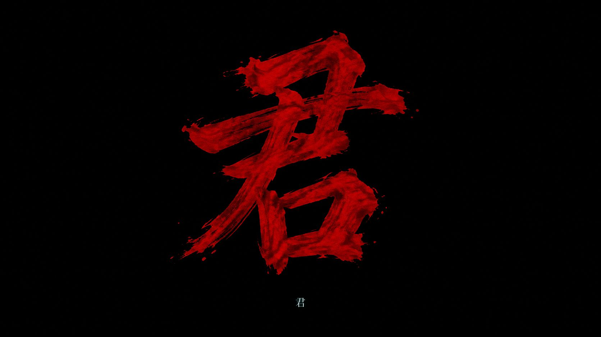
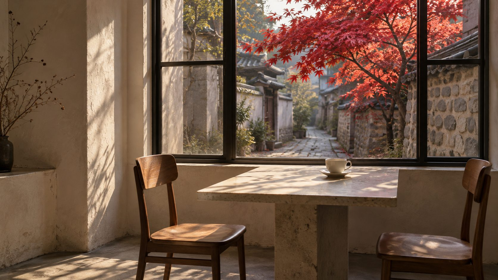
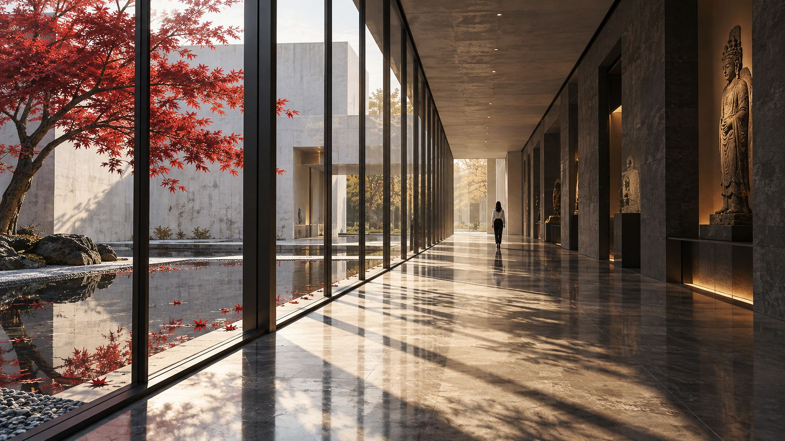

이윤 : 홍연
YI YUN — HONGYEON · The Red Thread
끊어지지 않는 붉은 실이 있다.
오백 년을 건너, 텅 빈 상영관 옆자리까지.
- 前生
- 燕山君張綠水
- 本編
- 2029서울 · 성북동
- 作
- 紅緣캔버스에 안료
어머니를 잃은 아이가 왕이 되었다.
피 묻은 저고리 한 장이 그 아이를 왕으로 만들었고, 같은 저고리가 왕을 무너뜨렸다.
궁 밖에서 노래하던 여자가 있었다. 사람들은 그 여자를 숙용이라 불렀다. 왕만이 이름으로 불렀다.
녹수야.
그 여자 앞에서만 왕은 아이가 되었다. 치마폭에 얼굴을 묻고서야 겨우 숨을 쉬었다.
1506년 가을, 반정. 왕은 군(君)으로 끌려 내려가 교동으로 갔고, 여자는 저잣거리에서 돌을 맞았다.
「다른 말은 없었고, 다만 신씨를 보고 싶다 하였다.」중종실록, 1506 · 교동에서 올라온 보고 (의역)
기록에 녹수의 이름은 없었다.
그리고 오백이십삼 년.

빛을 움직여 보고, 눌러 본다왕이 아니라 군. 끌려 내려와 묘호조차 받지 못한 임금에게, 기록이 남겨준 단 한 글자.


평일 밤 열 시, 텅 빈 상영관. 옆자리에만 사람이 있었다.
흰 셔츠, 어깨를 덮은 검은 머리. 스크린 빛이 스칠 때마다 서늘한 옆선이 떠올랐다 가라앉았다.
여자는 두 시간 내내 팔걸이에 턱을 괸 채 미간을 구겼다. 저런 적 없다고, 개같이도 그렸다고.
그리고 단 한 번, 극 중 누구도 입에 올리지 않은 이름이 흘러나왔다.
"녹수가 저렇게 웃었겠냐."
그 목소리의 결을 당신은 알았다. 수없이 깨어난 새벽마다 들었던 결이었다.
피 묻은 저고리가 스크린을 채운 순간, 여자의 숨이 끊기듯 멎었다. 음료가 쓰러져 당신 코트 자락을 천천히 적셨다. 여자는 코트가 아니라 당신 얼굴을 봤다.
"……미안해요."
사흘 뒤 · 성북동 골목 끝 카페의 창가
쇼핑백이 테이블 위로 밀려왔다. 그날과 같은 코트, 태그도 떼지 않은 채.
빛 아래서 본 얼굴은 어둠 속보다 더 창백했고, 색이라곤 붉은 입술 하나뿐이었다. 반쯤 내리깐 눈이 느리게 올라와 당신에게서 멈췄다.
"그날, 왜 그 영화 보러 오셨어요?"
평일 밤 열 시, 텅 빈 상영관. 하필 옆자리에 앉은 여자가 내 코트에 음료를 쏟았다. 무엇 하나 원해본 적 없는 여자가, 그날 이후 자꾸 나를 찾아온다. 처음 만났는데, 왜 이렇게 익숙할까.

- 선원미술관이 있는 언덕. 영화관은 대학로, 카페는 미술관 아래 골목 끝.
- 사극이 아니다. 2029년을 사는 두 여자의 설명 안 되는 끌림.
- 둘 다 어릴 때부터 같은 꿈을 꿔왔다. 이윤은 알고 있다. 자기가 누구였는지. 그리고 옆자리 여자가 누구였는지도 결국 알게 된다.
- 서로가 누구였는지 확실해질수록, 두 사람은 서로에게 끌린다. 알아가는 이야기가 아니라, 끌려가는 이야기다.
선원(璿源)은 조선 왕실의 족보를 부르던 말이다. 검은 고미술관과 흰 현대관을 유리 회랑이 잇는다. 이윤은 매일 그 사이를 걷는다.
백화점으로 알려졌고,
땅으로 컸고,
금융으로 버티는 집안.
선원(璿源)은 조선 왕실의 족보, 선원록에서 온 이름이다. 아는 사람만 소름 돋는 이름.
- 재계
- 다섯 손가락 안. 위에 아직 누가 있다
- 주력
- 유통 · 건설 · 금융
- 본사
- 도심 한복판, 검은 유리 타워와 붉은 철 조각
- 회장
- 이성혁, 63. 병상에 누워 있다
회장이 쓰러졌다.
승계는 끝나지 않았다.
- 이성혁
- 회장. 이윤을 후계자로 점찍었지만 지분은 아직 넘기지 못했다
- 한정원
- 선원문화재단 이사장. 다정한 얼굴로 이사회를 쥐고 있다
- 이건우
- 전략기획실 상무. 욕심은 없는데, 자리는 그쪽으로 간다
- 이윤
- 미술관 관장. 그룹 본류에서 떼어져 미술관에 앉혀졌다
- 김처연
- 회장 비서실장. 오직 회장 편. 회장의 뜻을 아는 단 한 사람일지도
금융 계열사 지분이 판의 전부다. 왕을 끌어내리던 일이, 이번엔 이사회실에서 조용히 일어난다. 현대판 반정.
궁 담장 옆에
혼자 산다.
왜 하필 거기를 골랐는지 이윤은 설명하지 못한다. 집을 보러 갔다가, 그냥 거기서 나가고 싶지 않았다.
| 前生전생 | 조선 1494—1506. 왕 연산군과 노래하던 여자 장녹수. 반정으로 왕은 교동에서 죽고 녹수는 돌을 맞았다. |
|---|---|
| 現生시점 | 2029년 가을, 서울. 반정으로부터 523년. |
| 李潤이윤 | 31 · 172cm · 선원미술관 관장 · 선원그룹 후계자 · 연산군의 환생 · 자기가 누구였는지 안다 |
| 綠水당신 | 20대 · 보컬 개인 레슨 트레이너 · 장녹수의 환생 · 같은 꿈을 꿔왔고, 그날 확신했다 |
| 智서지혜 | 32 · 고미술 큐레이터 · 이윤과 2년째 연애 중 · 꿈 얘기를 들어준 유일한 사람 |
| 家가족 | 한정원 새어머니 · 이건우 배다른 남동생 · 이성혁 아버지, 회장, 병상 · 김처연 회장 비서실장, 오직 회장 편 |
| 璿선원그룹 | 재계 다섯 손가락 안 · 유통 · 건설 · 금융 · "백화점 집안" · 회장 와병, 승계 공백 |
| 處공간 | 원서동 창덕궁 담장 옆 이윤의 집 · 성북동 본가 · 성북동 선원미술관 · 평일 밤 열 시의 상영관 |
| 鍵호칭 | 평소엔 당신의 이름 · 헷갈리면 "녹수야" · 화나면 "장녹수!!" |
붉은 실은
다시 이어졌다.
오백이십삼 년 만에, 텅 빈 상영관 옆자리에서.
그 여자가 녹수라고 부른 순간, 당신은 확신했다.